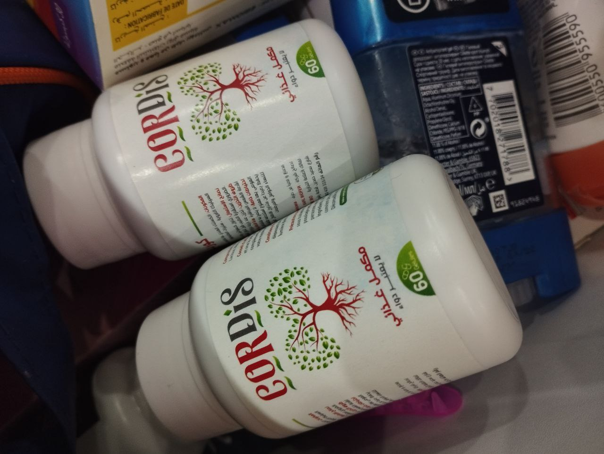

بعد تنظيف الأوعية - سيتوقف ضغط الدم لدى كبار السن عن الارتفاع وستختفي 9 مشاكل صحية اخرى "!

دينيس بوتوف - طبيب روسي . معروف بمساعدته للناس بدون إستخدام مواد كيميائية مضرة .
نادرا ما يجري الطبيب الروسي دينيس بوتوف مقابلات، محاولاً تكريس المزيد من الوقت لمساعدة المرضى. ومع ذلك، كانت المراسلة اولجا محظوظة - وافق الطبيب دينيس على الإجابة عن بعض الأسئلة لهؤلاء المرضى الذين لا تتاح لهم فرصة مقابلته في العيادة.
دينيس بوتوف على يقين تام من أن كل فرد يمكنه تنظيف الأوعية الدموية في المنزل وتحسين صحته . يساعد هذا التنظيف على التخلص من ارتفاع ضغط الدم و التخلص من 9 مشاكل صحية خصوصاً لكبار السن لأصحاب المعاشات.
تحدث الطبيب أدناه عن كيفية القيام بتنظيف الأوعية الدموية . تتحدث المقالة أيضًا عن موضوعات مثل:
- لماذا تتعلق الكثير من المشاكل الصحية والغير قابلة للشفاء مع تلوث الأوعية الدموية؟
- أعراض خفية وواضحة لتلوث الأوعية الدموية
- الطرق الحديثة للتخلص من ارتفاع ضغط الدم المرتبط بالعمر بدون حبوب كيميائية
الأوساخ في الأوعية الدموية هي مشكلة جدية !
على لسان الطبيب دينيس بوتوف:
- سأقدم لكم بعض المعلومات التي آمل أن تفكروا فيها!
تعتبر مشاكل القلب والأوعية الدموية مسؤولة عن أغلب المشاكل الصحية للإنسان . و السبب الرئيسي لظهورها مع تقدم العمر هو الكوليسترول. اتضح أن الكوليسترول هو أخطر مادة على هذا الكوكب. هذه المادة تقتل أشخاصًا أكثر من الكحول والنيكوتين والمخدرات.
في الكثير من الحالات ، إذا كان الشخص لا يعيش حتى سن الشيخوخة ، فذلك لأن الكوليسترول هو السبب الرئيسي و بالطبع الأعمار بيد الله
الكوليسترول يدمر الصحة. إذا لم يتراكم في الأوعية ، فيمكن للإنسان أن يعيش بسهولة حتى الشيخوخة و أكثر .
كيف يبدو الكولسترول وما هو لن أعطي هنا وصفاً لهذه المادة ، كما هو مكتوب في الكتب المدرسية. سأشرح الأمر أسهل. تخيل الشحوم الباردة المتبقية في مقلاة غير مغسولة بعد الغداء. هذا ما يبدو عليه الكوليسترول.
هذه المادة ، في الدم ، تترسب على جدران الأوعية الدموية. أولا ،تتكون لوحة صغيرة من الكوليسترول (في عمر الـ20-25 سنة) ، ثم تنمو طبقة الكوليسترول بسرعة (في عمر 25-40 سنة) ، حيث تلتصق المزيد من الجسيمات بالطبقة اللاصقة. ونتيجة لذلك ، في سن ال 40 ، يقلل الكوليسترول من وظائف الأوعية بمقدار النصف تقريبا. ردا على ذلك ، ليس لدى القلب خيار سوى زيادة الضغط. يعاني الشخص من ارتفاع الضغط المرتبط بالعمر وارتفاع ضغط الدم مع كل العواقب. ولكن حتى هذا ليس أكثر خطورة!
و الأخطر من ذلك هو أن الكوليسترول يسد تماما الأوعية الصغيرة الموجودة في جميع الأنسجة. نتيجة لضعف إمدادات الدم ، تتطور المشكلة في الأعضاء الداخلية. مما ينتج شخص يعاني من تقرحات مزمنة.
أولاً، ستؤذي المعدة ثم الطحال وبعد فترة سيظهر أيضًا تضيق في الكبد والبنكرياس. عادة في مثل هذه الحالات يقولون أن صحة الشخص تبدأ في الانهيار. غالبًا ما يؤدي الكوليسترول إلى هذه الحالة .

الكوليسترول. في سن 50-60 - يتراكم الشخص ما يصل إلى 3.5 كجم من هذه المادة الخطرة!
يعتمد كل شيء حرفياً على حالة أوعية الجسم. إذا أصبحت الأوعية مسدودة في الساقين، فإن هذا يؤدي إلى الدوالي والوذمة المستمرة والثقل الأبدي في الساقين. إذا حدث هذا في الكبد ، يحدث التهاب الكبد وتلفه ، إذا كان في المفاصل يظهر التهاب المفاصل وهشاشة العظام أو ألم في العمود الفقري. إذا إنسدت الأوعية الدموية في العين ، و يصبح الشخص أعمى تدريجياً.
لا يجب تجاهل الأوعية الملوثة ! يحدث هذا للأوعية الدموية لكل شخص. تؤدي الترسبات في الأوعية الدموية إلى الشيخوخة السريعة.
يشمل الكوليسترول رد الفعل المتسلسل للشيخوخة في الجسم. وتلوث الأوعية هو الذي يؤثر على حياة الإنسان .
لكن ليس فقط الكوليسترول - فيوجد مواد الأخرى تلوث الأوعية الدموية أيضًا!
على لسان الطبيب دينيس بوتوف:
الكوليسترول هو نصف المشكلة و لكن هناك مادتان أخريان تتراكمان في الأوعية الدموية!
جلطات الدم
إذا كان الكوليسترول يشبه الدهون ، فإن كتلة الجلطات (جلطات الدم) تشبه الجبن. تتشكل مجموعات من الجلطات على الجدران الداخلية للأوعية. خطر تجلط الدم أعلى مع الكوليسترول. في أي وقت قد تنفصل الجلطة الدموية عن جدار الوعاء الدموي وتصل إلى القلب مسببة نوبة قلبية أو إلى الدماغ مسببة سكتة دماغية. كلا المشكلتين قاتلتين مع احتمال كبير جدا لتفاقم المشكلة .
كلما تقدم الشخص في السن - زادت مخاطر التخلص من الجلطة الدموية. هذا هو السبب في أن كبار السن يعانون في كثير من الأحيان من السكتة الدماغية أو النوبة القلبية.
بلورات الكالسيوم
هذه هي أملاح المعادن الثقيلة والزئبق والمواد الكيميائية المختلفة المتراكمة خلال الحياة. إذا كان يعمل الانسان، على سبيل المثال، في صناعة خطرة، فسيكون لديه المزيد من هذه المواد . على الرغم من أنه في ضوء البيئة الملوثة الحالية يتراكم بلورات الكالسيوم في كل شخص. هذا يعني أنها تعزز الانقسام غير الطبيعي للخلايا مما يؤدي إلى الإصابة بالسرطان.
الكثير من الذين يعانون من السرطات لديهم مستويات عالية من ترسبات الكالسيوم في اوعيتهم . نعلم جميعًا أن الزئبق ضار. ومع التراكم الكبير لبلورات الكالسيوم - يصبح الدم نفسه خطيرًا.

بحلول سن 50 - تزداد نسبة انسداد الأوعية الدموية في جميع أنحاء الجسم. كلما تلوثت الأوعية الدموية - كلما ظهرت المشاكل الصحية و كلما شعر الشخص بالسوء!
قم بفحص نفسك! ما مدى تلوث أوعيك ووجود خطر على صحة القلب !
على لسان الطبيب دينيس بوتوف:
يجب أن أقول على الفور أنه إذا لم تقم بتنظيف الأوعية مطلقًا وكان عمرك أكثر من 50 عامًا - فإن أوعيتك ملوثة. إذا قمت بتنظيفها - فسوف تشعر بتحسن على الفور.
أعراض تلوث الأوعية الدموية:
- سيلان الأنف في الصباح
- الضوضاء في الأذنين
- وجود بقع سوداء أمام العيون
- الم في المفاصل
- دوخة
- الأرق في الليل والنعاس أثناء النهار
- الشعور بالتعب المستمر
- ضعف البصر
- ذاكرة ضعيفة
- توسع الأوردة
- ضعف السمع
- مشاكل الجهاز الهضمي الشائعة
- مشاكل الوزن الزائد
هل تود القول أن تنظيف الأوعية الدموية يمكن أن يكون مفيداً لكبار السن و لتطبيع ضغط الدم؟
على لسان الطبيب دينيس بوتوف:
- أنا اؤكد ذلك. أنا شخصياً أنصح الآن بتطهير الأوعية الدموية لجميع الأشخاص فوق سن 30 . وبعد التنظيف ننظر إلى التغييرات.
بعبارة أخرى، سيتمكن العديد من الأشخاص الذين يستخدمون منتجات كيميائية للتخلص من ارتفاع ضغط الدم بشكل يومي الآن من الامتناع عنها. كل ما عليك فعله هو تنظيف الأوعية الدموية.
لسوء الحظ -لا يعرف الكثيرون هذه الطريقة و هي ببساطة الحل الأمثل للتخلص من مشاكل القلب .
السيدة سناء المتقاعدة تعافت من ارتفاع ضغط الدم بتنظيف أوعيتها الدموية. وهناك الكثير من هؤلاء الناس ...
أريد أن أريكم رسالة من السيدة سناء ، متقاعدة . جاءت لي و نصحتها بأن تستخدم طريقتي في تنظيف الأوعية الدموية و بالفعل نفعتها و هذه قصتها.
بعد 3 أشهر، راسلتنا السيدة سناء بنفسها! اريد ان اريكم رسالتها.

"شكرا جزيلا لمنحي الحياة مجدداً ! عندما اتصلت بك ابنتي، كنت شبه فاقدة للوعي، لم أفهم شيئًا. رأسي يؤلمني بسبب ارتفاع ضغط الدم والذي لا يمكن حتى للطرق التقليدية أن تخفضه. أخبروا ابنتي بإعداد مكاني في المقبرة. لكن بالفعل جئت لك ثم بدأت تعطيني ذلك المنتج المذهل الذي ساعدني على التخلص من كل مشاكل الأوعية الدوية . الحمد لله ، إختفت المشكلة شيئاً فشيئاً ، انخفض الضغط. الآن لا يرتفع على الإطلاق.بعد ذلك عندما أخبروني أنني بصحة جيدة بالنسبة لعمري ، فوجئت .لانني قبل بضعة أشهر ، كنت على وشك الموت. آمل حقا الاستمرار في العيش هكذا . أنا أحب الحياة من كل روحي. شكرا جزيلا لمساعدتك لي وخلاصي.
هنا يمكن أن تحدث معجزة بعد تنظيف الأوعية. على الرغم من عدم وجود أي معجزة في الواقع هنا - كل شيء قابل للتفسير.
طريقة لتنظيف الأوعية للمتقاعدين و الأشخاص اللذين يعانون من ارتفاع ضغط الدم
على لسان الطبيب دينيس بوتوف:
- حتى الآن، - هناك منتج واحد فقط يقوم بعمل جيد لهذه المهمة. يطلق عليه CORDIS . .شتمل تركيبته على حوالي 40 مكونًا نشطًا - مستخلصات نباتية مفيدة للأوعية الدموية والفيتامينات والعناصر الدقيقة والكليّة.

العنصر الأكثر أهمية في مكونات " CORDIS "هو جزيئات الأكسجين النشطة "، والتي هي قادرة على" تنظيف " المواد المتراكمة في الأوعية الدموية . أنها تذوب الكولسترول ، جلطات الدم وبلورات الكالسيوم.
سأدرج ما سيفعله CORDIS لجسمك وصحتك أثناء التنظيف ولعدة أشهر بعد ذلك.
ينظف وينظم الأوعية الدموية
بسبب "جزيئات الأكسجين النشطة" ، سيذيب CORDIS رواسب الكوليسترول وجلطات الدم وتراكم الكالسيوم. أيضا ، بفضل مستخلصي الكستناء الهندي و الهامامليس ، يزيد هذا المكمل الغذائي من نشاط الأوعية الدموية ويعيد مرونتها. بعد إستخدامه سوف تصبح الأوعية نظيفة ومرنة . سوف يتم استعادة الشعيرات الدموية الصغيرة. ونتيجة لذلك ، يتوقف ضغط الشخص عن القفز ، ويختفي الضعف ، والنعاس ، ويحسن إلتئام الجروح . بالإضافة إلى ذلك ، تظهر المزيد من الطاقة. سيكون لديك الكثير من الطاقة ، وسوف ترغب في القيام بشيء ما في المنزل.
مساعدة الأعضاء الداخلية والمفاصل
بعد تنظيف الأوعية - ستبدأ عملية تنظيم الأعضاء الداخلية. لحسن الحظ - منحنا الله خاصية مثل هذه لتجديد الخلايا. نتيجة لذلك، تختفي بفضلها العديد من المشاكل الصحية . على سبيل المثال، إذا كنت تعاني من ألم في البنكرياس أو الطحال - فسوف يتوقفون عن إزعاجك. في كثير من الأحيان، بعد تنظيف الأوعية - تتقلص أربطة المعدة والاثني عشر. بالإضافة إلى ذلك - و يساعد هذا أيضاً على التخلص من ألام المفاصل .و تختفي القرحة والنقرات في العنق والظهر .
يذيب الدهون الزائدة
الوزن الزائد هو ما يؤدي إلى تفاقم مشكلة إرتفاع ضغط الدم ، فكلما زاد الثقل على الأوعية والقلب والمفاصل ستكون دائماً لديك مشكلة مع الاوعية القلب . غالبً ما يكون سبب زيادة الوزن هو انسداد الأوعية الدموية ، حيث لا يمكن إخراج الجلوكوز من الأنسجة بالكمية الصحيحة. بعد تنظيف الرواسب من الأوعية ، يتناقص الوزن تلقائيا. بالإضافة إلى ذلك ، الكستناء الهندي يساعد على خفض مستويات السكر في الدم والكوليسترول الضار، ويحسن صحة القلب والأوعية الدموية، ويعزز المناعة، ويقلل من التهابات الجسم و المشاكل المزمنة و إلتهاب المفاصل . ، مما يسرع من تكسير الدهون.
تحسن الرؤية والذاكرة
يحتوي CORDIS على مستخلص منتجات طبيعية 100% مثل (الكستناء الهندي - الهامامليس - مونوهيدرات اللاكتوز - السيليكا الغروية ) و غيرهم الكثير من المكونات الطبيعية والتي تساعد على تنظيف الأوعية الدقيقة لقاع العين مما يؤدي إلى المساعدة على تحسن الرؤية تدريجيًا للشخص. سوف تبدأ في رؤية أرقام الحافلات من بعيد مرة أخرى و ستصبح قادر على إدخال الخيط في الإبرة من المرة الاولى. أولئك الذين لديهم أوعية نظيفة لا يتعرضون لخطر الإصابة بمشاكل العيون !
زيادة الفاعلية عند الرجال!
أحد الآثار المذهلة لتطهير الأوعية الدموية هي أن هرمون التستوستيرون يبدأ في الإنتاج مرة أخرى عند الرجال. ونتيجة لذلك، يختفي التهاب البروستات. وكذلك تعود القوة. حتى إذا كان سنك كبير ، فيمكنك ممارسة الجنس مرة أخرى.
تأثير الفراشة لكبار السن الأشخاص اللذين يعانون من ارتفاع ضغط الدم
يشبه CORDIS حركة أجنحة الفراشة ، مما یخلق سلسلة من ردود الفعل الملیئة بالأحداث المذھلة . CORDIS ، بدءا من الاستخدام التدریجي لنفایات الأوعیة الدمویة المتراكمة على مدى عقود ، یؤدي إلى تفاعل متسلسل لتجدید الجسم .
بعد فترة قصيرة من تنظيف الأوعية الدموية سيبدو الأمر بمثابة ولادتك من جديدة. في نفس الوقت، ستشعر كل أسبوع بتحسن ملحوظ.
الإستيقاظ السهل
في الصباح ، یمكنك الاستیقاظ بسھولة والنھوض من السریر دون انتظار ساقیك وظھرك ورقبتك للتعافي من الخدر
صحة ومزاج ممتاز
أنت في مزاج جيد في الصباح وطوال اليوم. تنام جيدا. تشعر بالحيوية. لا داعي للركض باستمرار إلى المرحاض ليلاً. لا شيء يؤلم أو يحك.
إفطار شهي
يتم توسيع قائمة طعامك بشكل كبير. لم تعد بحاجة إلى اتباع نظام غذائي صارم. إذا أكلت - فلن تعاني من الحموضة ولن يكون لديك احساس بثقل في الجنب.
قوة شبابية
عند مغادرة المنزل - لا داعي للقلق بشأن ساقيك - فأنت لا تنظر إلى المشي على أنه عبء، . لا مزيد من ضيق التنفس والدوار
الهدوء المطلق
أنت ھادئ ومرتاح . ذھب الألم المستمر الذي حجب وعیك ومنعك من التركیز . عندما لا تشعر بالألم ، فإنك تشعر بالأشیاء والأصوات والروائح المألوفة بشكل أقوى .
لديك بصر ممتاز
حتى ضعف البصر الشديد سيبدأ في الإختفاء شيئاً فشيء . ما رأيته بشكل خافت من قبل سوف يتضح. ستتمكن من رؤية رقم الحافلة من بعيد وستتمكن من الاستمتاع بجمال الطبيعة.
أخبرنا من فضلك كيف يمكن للأشخاص شراء هذا المنتج الرائع ؟
يتم بيع هذا المنتج فقط عبر الإنترنت عن طريق الشركة المصنعة مباشرةً و هذا أم جعل شرائه أسهل بكثير و أيضاً بدون دفع مسبق و هذا معناه انه الدفع عند إستلام المنتج و هذا ما جعل الأمر اسهل للمستخدمين .
شروط الحصول على CORDIS :
- يجب أن تكون في الجزائر. لا يتم شحن CORDIS الى الخارج.
- يُسمح بشراء CORDIS للاستخدام الشخصي فقط!
- يمكنك التقدم بطلب للحصول على هذا المنتج من خلال المشاركة في المسابقة المدرجة من قبل الشركة المصنعة عن طريق الضغط على عجلة الحظ و ربما تكون شخصاً محظوظاً للحصول على تخفيض يصل إلى 50% عند شرائك دورة CORDIS
بعد الضغط على عجلة الحظ سوف يظهر لك نموذج الطلب الرسمي و كل ما عليك هو ان تملأه بإسمك و رقم هاتفك و سوف تتواصل معكم الشركة المصنعة لتأكيد عنوان التوصيل .
اغتنم هذه الفرصة قبل أن يفعلها الآخرون!
للمشاركة في المسابقة الجارية للخصم - تحتاج إلى النقر فوق زر "تدوير" الموجود بمنتصف العجلة . اعتمادًا على ما ستحصل عليه - يمكنك الحصول على CORDIS بخصم يصل إلى 50%! . يمكنك فقط تدوير العجلة مرة واحدة.
انتباه! CORDIS ينفد بسرعة!
عدد العبوات المتبقية يتناقص بسرعة!
عدد العبوات المتبقة :
36 عبوة.
بعد النقر على زر "تدوير"، سيتم حجز CORDIS لك.
لقد تم حجز CORDIS . لديك 10 دقائق لتقديم طلب.
سعر المنتج لك سيكون 5999 DZD
للحصول عليه، يرجى تقديم اسمك ورقم هاتفك.
بقي من الوقت:
09 : 26
11998 DZD
5999 DZD
عند شرائك دورة CORDIS
* (إذا فشلت في إكمال النموذج خلال الوقت المحدد - فسيتم تحويل حجزك إلى عميل آخر حيث لم يتبق سوى القليل من المنتج).
التعليقات
